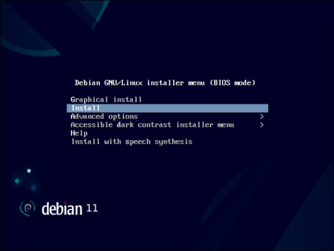
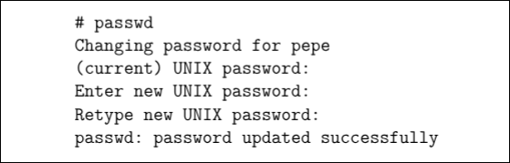
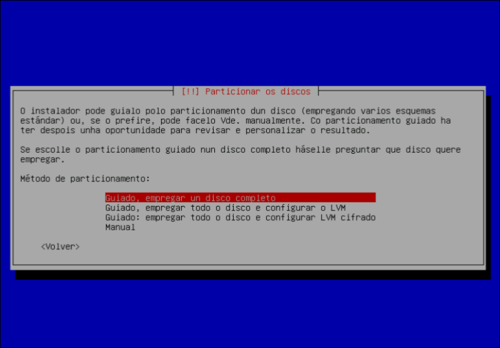
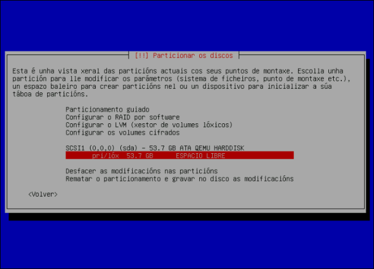
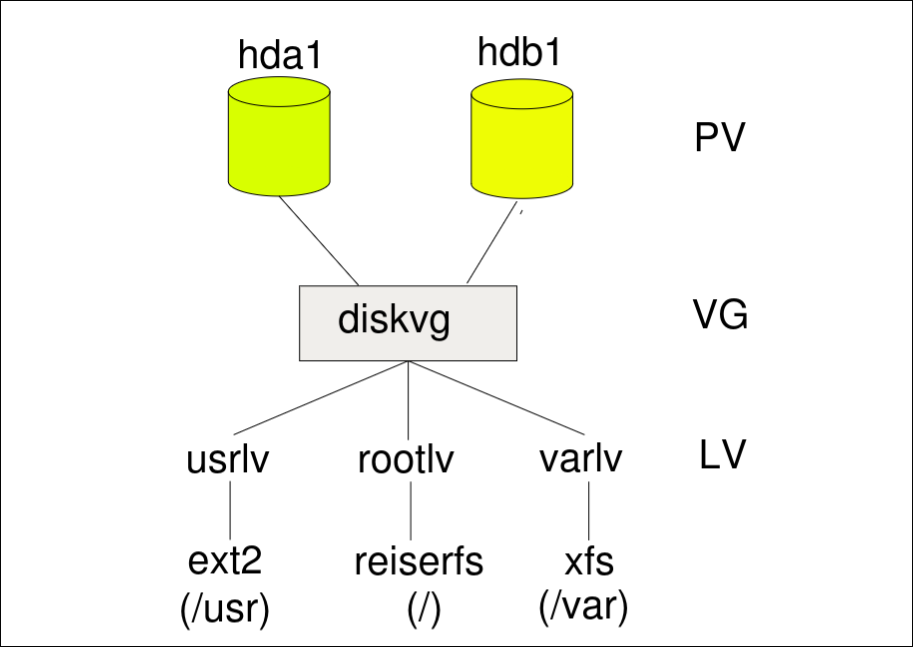

ASR · curso 3
1. Instalación de Linux Debian · ASR
Importante
Estos apuntes están bien para entender ciertos conceptos complejos. Sin embargo si quieres sacar nota en el examen (ya te aviso que complicado), yo complementaría con los del profe porque tiene más ejemplos e información más concisa.
1.1 Tipos de Instalación
A la hora de instalar un sistema, tenemos que tener en cuenta el tipo de funciones que va a desempeñar.
- Sistema de escritorio: usado en tareas rutinarias
- Estación de trabajo: sistema de alto rendimiento, generalmente orientado a una tarea específica.
- Servidores: ofrecen servicios a otras máquinas de la red
- Servicios de disco: acceso a ficheros a través de FTP, servicio de disco transparente a través de NFS o Samba
- Servicios de aplicaciones, por ejemplo, terminales, conexión remota (telnet, ssh) ...
- Servicios de directorio, por ejemplo, LDAP, que almacena credenciales de usuarios, directorios, etc.
- Servicios de bd
- Servicios de impresión
- Servicios de red
1.2 Instalación
Primero descargamos la imagen de CD de instalación por red de le versión seleccionada (debian-versión-amd64-netinst.iso).
Nota
Esta explicación antes de la imagen no entra en el final, pero joder yo creo que son cosas que no todo el mundo tiene claro y veo importantes. Seguramente meta más cosas que vea interesantes pero ya pondré algo como esto para saber si entra o no. Me jode q una asignatura como esta no explique la mitad de conceptos como se debería.
Un archivo .iso (o imagen ISO) es una copia digital exacta de un disco óptico (CD, DVD o Blu-ray). Imagínatelo como una "caja virtual" que contiene todos los archivos de instalación del sistema operativo y, lo más importante, la estructura necesaria para que tu ordenador pueda "arrancar" (bootear) desde ese archivo.
Cuando ves una opción llamada Netinst (Network Installer) o "Imagen de instalación por red", se refiere a una ISO minimalista. A diferencia de una imagen estándar, esta ISO contiene solamente lo estrictamente necesario para:
- Arrancar el ordenador.
- Detectar tu hardware básico (tarjeta de red, disco duro).
- Conectarse a internet.
Una vez que arranca el instalador, este descarga el resto del sistema operativo (el entorno gráfico, las aplicaciones, el navegador, etc.) directamente desde los servidores oficiales de Linux durante el proceso de instalación.
Tiene ciertas ventajas, como que siempre va a estar actualizado, ocupa poco espacio y es personalizable, si no te quieres bajar algunos paquetes puedes desmarcarlos y quitarte bastante morralla.
Sin embargo como no tengas internet estás jodido y la instalación obviamente va a ser más lenta si usas internet.
Además ya para llegar a este paso deberías saber cómo bootear un SO. Eso lo tengo explicado en un repositorio llamado HyprDebian en mi perfil de github.

Cuando lanzas el iso te salta esta pestaña y empieza la magia.
1.2.1 Siguientes pasos en la instalación
Seleccionas el idioma, localización y teclado.
Configuración de la red, por defecto, intenta configurarla por DHCP. Si no lo consigue, pasa a configuración manual (indicar máscara, pasarela y DNSs)
Para que nos entendamos, configurar la red es decirle a tu ordenador quién es, dónde está y a quién debe preguntar para salir a internet.
Por si no te acuerdas de redes, DHCP es un sistema de configuración automática. Cuando tu ordenador arranca, grita a la red "Soy nuevo, alguién me da una dirección", y el servidor DHCP (normalmente el router de casa) responde y le entrega todos los datos necesarios (IP, máscara, puerta de enlace, DNS) automáticamente.
Si esto falla estamos jodidos porque la tienes que configurar tu a mano completando esos campos:
- IP, matrícula única que identifica a tu máquina dentro de la red
- Máscara de subred, le indica a tu ordenador qué direcciones IP son sus vecinos (red local) y cuales están fuera (internet). Por lo que define el tamaño de tu red local.
- Pasarela o Puerta de enlace, es la dirección IP del router. Cuando tu pc quiere entrar a una web que no está en tu casa, no sabe como llegar, la pasarela es a quien le entrega el paquetes de datos para que lo envíe fuera a Internet, si pones mal esto, vas a tener red local pero no acceso a internet.
- DNS, Domain Name System. Son servidores que traducen nombres humanos a direcciones IP. Cuando escribes
google.comel servidor DNS le dice a tu ordenador: eso es la IP142.250.200.46
Después le ponemos un nombre a la máquina e indicar el dominio. El nombre de la máquina (hostname) es como te llamas tú o como quieres que se le llame a tu PC para diferenciarlo de otros en la misma red (bastante más cómodo que andarle metiendo la ip para comunicarse con el). El dominio es como tu apellidos, si vas a usar tu pc para ti no tiene mucho sentido ponérselo. Sim embargo si estas en una empresa es bastante útil.
Por último se fija el password del superusuario (root) y se crea un usuario no privilegiado.
1.2.2 Cuenta del superusuario
Es un usuario especial que actúa como administrador del sistema. Tiene acceso a todos los ficheros y directorios del sistema, puede crear otros usuarios o eliminarlos. Además puede tanto borrar como instalar software del sistema o aplicaciones. Puede detener cualquier proceso que se está ejecutando en el sistema. Hasta puede detener y reiniciar el sistema.
Para cambiarnos de un usuario normal a superusuario usamos su -, dónde su es un comando que nos permite cambiar de usuario su [opciones] [-] username, si no especificamos username pasamos a root (superusuario).
1.2.3 Elección de contraseña
Lo suyo es escoger una constreña segura, si eres tonto y metiste como contraseña asdf y quieres proteger a tu ordenador un mínimo siempre la puedes cambiar gracias al comando passwd:

1.2.4 Continuación de la instalación
En una instalación por red los paquetes se traen de un repositorio remoto a través de http o ftp (ftp no se usa normalmente pero aún hay algunos servidores de debian que lo usan).
Seleccionamos el huso horario. Y realizamos el particionado del disco (modo guiado o manual).

1.2.5 Particionado del disco
Podemos optar por instalar todo el sistema en una sola partición, aunque no es nada recomendable (a ver en verdad es recomendable si no quieres romperte la cabeza o arriesgarte a joder todo el disco). Lo más recomendable es instalar diferentes directorios del sistema en diferentes particiones.
Para entender bien lo que es una partición imagínate que tu disco duro es una nave industrial vacía. Una partición es levantar paredes para dividir esa nave en habitaciones separadas. Físicamente sigue siendo el mismo edificio pero lógicamente, lo que ocurre en una habitación no afecta al resto. Si se inunda el baño (una partición), no se te van a mojar los muebles del salón.
Los directorios son simplemente las carpetas donde el sistema operativo organiza los archivos. Los más importantes en linux son:
/: es la base de todo, aquí van los archivos vitales/home: aquí van los documentos personales/var: aquí se guardan cosas que cambian muco, como los registros de errores o web si tienes un servidor- y así otros muchos directorios que se explican más adelante
Se recomienda poner directorios en diferentes particiones porque:
-
Caso de
/home:- Si tienes todo en una partición y tu linux se rompe o quieres instalar una versión más nueva, al formatear el disco para instalar el sistema, borrar también tus fotos y documentos personales porque todo está en el mismo saco.
- Si lo tienes separado: tienes una partición para el sistema y otra diferentes para tus datos, por lo que puedes borrar, formatear y reinstalar el sistema operativo 50 veces en la primera partición y tus fotos en
/homesiguen intactas.
-
Caso de
/var: Imagínate que un programa se vuelve loco y empiez a escribir errores en un archivo de texto sin parar- Todo en una partición: el archivo crece hasta llenar el disco y el ordenador se bloquea
/varseparado: el archivo llena/varpero/sigue con espacio y el ordenador sigue funcionando.
1.2.6 Fylesystem Hierarchy Standard
La entrada principal
/ todo pende de este directorio llamado root o raíz, se puede pensar como que vestíbulo principal y el resto de carpetas son pasillos que salen de este vestíbulo.
Las Herramientas (programas)
En lugar de tener una carpeta por programa, Linux separa los archivos en diferentes "cajas" según quién los usa y para qué:
/bin/(Binaries): es la caja de herramientas de emergencia. Contiene lo mínimo para que el sistema funcione (comolspara listar archivos ocppara copiar). Si se rompe todo, esto debe estar disponible./sbin/(System Binaries): son herramientas exclusivas para el administrador del sistema. Aquí están los comandos para formatear discos, configurar redes, etc. Un usuario normal no los puede usar./usr/(User System Resources): aquí es donde vive el 90% del software "normal". Es como el almacén general./usr/bin: aquí están chrome, libreoffice, etc/usr/local: aquí va lo que instalar tú manualmente para no mezclarlo con lo que trae el sistema
/opt(Optional): es para software extraño o comercial que no sigue las reglas de Linux. Son aplicaciones que requieren un subdirectorio separado del resto.
La sala de máquinas y configuración
/boot: es el botón de encendido. Contiene los mapas y las instrucciones exactas para arrancar el ordenador/etc: es el panel de control. Aquí no hay programas, solo archivos de texto con configuraciones. Si por ejemplo quieres cambiar la IP, está en un archivo enetc. Scripts de configuración./lib: son las piezas de repuesto compartidas. Los programas de/binnecesitan estas piezas para funcionar. Librerías.
Los despachos
/home: es tu despacho personal. Aquí hay una carpeta con tu nombre. Es el único sitio donde guardar fotos, descargar y documentos libremente, fuera de aquí no tienes permiso para escribir. Es el directorio donde están los directorios de los distintos usuarios./root: despacho blindado del superusuario.
El almacén dinámico y temporal
/var(variable): piensa en esto como el buzón de correos y el libro de reclamaciones. Aquí se guardan cosas que crecen y cambian constantemente/tmp(temporal): es la pizarra borrable. Los programas escriben notas aquí mientras trabajan cuando reinicias el ordenador, todo lo que hay aquí se borra./srv: datos de servicios proporcionados por el sistema
Las conexiones externas
/media: es automático. Si metes un usb, el sistema crea una carpeta aquí automáticamente para que veas el contenido. Es el punto de montaje para medios removibles/mnt: es manual. Se usa históricamente para que el administrador "pegue" discos duros o redes temporalmente. Es el punto de montaje para otros sistemas temporales (por ejemplo, el montaje de una unidad de red, de una partición de otro sistema operativo, etc)
Los fantasmas (directorios virtuales)
Son complejos de entender puesto que no existen en el disco duro. Son ilusiones creadas por el sistema operativo en la memoria RAM.
/procy/sys: son una ventana al cerebro del ordenador en tiempo real, si entras en/proc/cpuinfo, no lees un archivo guardo, lees directamente lo que el procesador le está diciendo al SO en ese milisegudno./proccontiene información del sistema y/syscontiene información de dispositivos/dev(devices): en linux, todo es un archivo. Tu ratón es un archivo, tu disco duro es un archivo. Es un directorio que contiene seudoficheros de acceso a periférico
1.2.7 Esquemas de particionamiento
Dependiendo del tipo de sistema que queramos montar podemos escoger diferentes esquemas de particionamiento:
Nota
He metido información de más que considero interesante, si solo quieres aprobar con que sepas que particiones se recomiendan por esquema puedes continuar.
Máquina de escritorio (Tu pc personal)
El objetivo es la simplicidad y proteger tus datos, por lo que se recomiendan 3 particiones:
/raíz, aquí va el Sistema Operativo- swap (área de intercambio): cuando la RAM se llena, el sistema coge aquellos archivos que menos estás usando en ese momento para liberar espacio y los mete al swap, y cuando los vuelve a necesitar los saca del swap. Es un proceso mucho más lento, es un simple salvavidas que evita que un programa que usa mucha memoria se cierre de golpe o el PC se congele. Si quieres hibernar, todo lo que hay en la RAM se copia al swap y cuando quieres volver a arrancarlo se vuelve de nuevo a la RAM. La mítica frase de tienes que tener el doble de swap que de RAM pues joder tiene matices porque claro si tienes una castaña de RAM de 4 gb la vas a llenar muchas veces entonces pues el lógico tener el doble de swap, pero si tienes una RAM de 16 GB intenta llenarla fenómeno, por eso meter 32 gb de swap con poco disco es de no ser muy listo.
/home, esto es lo crucial. Al tener tus datos personales en una habitación aparte, si mañana te da por romper tu sistema operativo no vas a peder toso tus datos, puedes formatear la partición/y reinstalar el sistema sin tocar la partición.
Sistema multiusuario
El objetivo es la seguridad y que el servidor nunca se apague. Hay que evitar que uno de los múltiples usuarios sea capaz de cargarse todo el sistema, por ello hay múltiples particiones:
- Separar
/vary/tmp, imágina que un usuario ejecuta un programa mal hecho que empieza a generar errores infinitos o a descargar archivos basura sin parar. Si todo está junto se llena el disco entero y el sistema operativo se queda sin espacio y el servidor colapsa. Si tenemos/varseparado el archivo de errores solo llena la partición, sin afectar a/el servidor seguirá funcionando. - Separar
/usrsirve para protegerse de virus y hackers, puesto que es donde viven los programas ejecutables. Si lo pones en una partición aparte, puedes activarla como solo lectura, esto implica que una vez instalado el sistema, pones un candado a esa partición. Aunque entre un virus o un hacker, no podrá modificar los archivos ejecutables para infectarlos, porque estará prohibido. Tus usuarios no podrán bajarse apps de forma libre.
1.2.8 Particionamiento durante la instalación
Dos opciones:
- Particionamiento guiado (con o sin LVM, LVM ya lo explico más alante), donde se selecciona el tamaño de las particiones de manera automática
- Particionamiento manual, con control del número y tamaño de las particiones
1.2.9 Particionamiento manual
Seleccionamos el disco a particionar y crear nueva tabla de particiones

Creamos una nueva partición indicándole el tamaño, el tipo (primaria o lógica) y la localización (comienzo o final). Con la BIOS clásica puede haber 4 primarias o 3 primarias y una extendida, que a su vez se puede dividir en varias lógicas. Con UEFI se pueden crear hasta 128 primarias por disco.
Si no sabes que es BIOS o UEFI es simplemente un firmware (un mini-software) que vive en un chip de la placa base de tu ordenador. Es lo primero que se despierta al pulsar el botón de encendido, comprueba que la RAM y el procesador funcionan y luego busca un disco duro para arrancar el SO.
- BIOS es el sistema antiguo
- UEFI el moderno
1.2.10 Sistemas de ficheros
Linux soporta varios sistemas de archivos:
- ext4: Fourth EXTended filesystem, es el sistema de ficheros estándar en Linux
- Es un sistema de ficheros transaccional (como una bd)
- Tiene características que le permiten reducir la fragmentación
- Puede trabajar con discos y ficheros de gran tamaño.
- Las opciones pueden configurarse con el comando
tuen2fs - Las anteriores versiones
ext3yext2siguen estando disponibles
Nota
btrfs no entra pero yo de ti si fuese a montar mi SO usaría este porque es la versión moderna
-
btrfs: posible sucesor de ext4, pues presenta características avanzadas que además de mejorar el rendimiento, van dirigidas a la gestión y seguridad del almacenamiento:
- Gestiona de manera integrada el almacenamiento, pues incluye funciones que antes formaban parte del sistema de ficheros, del controlador RAID y del gestor lógico de volúmenes LVM
- Hace uso extensivo de copy-on-write, si varios recursos son idénticos se devuelve un puntero a un único recurso; en el momento en que se modifica una “copia” del recurso, se crea una copia auténtica para prevenir que los cambios sean visibles a las demás copias.
- Permite snapshots de solo lectura o modificables
- Etc
-
NFTS, exFAT: usados por Windows en ordenadores domésticos soportados también por linux
-
ReFS: usado por windows para empresas, no disponible de forma nativa para windows
1.2.11 Últimos pasos de la instalación
Debemos seleccionar el mirror desde el que descargar el software. Existen varios repositorios de paquetes Debian, y debemos elegir el más cercano. Introducir la información del proxy.
Después seleccionas los paquetes de software a instalar y por último instalas el gestor de arranque.
Si quieres entender lo que es un mirror piensa que debian es una fábrica gigante de USA donde se fabrica el software. Si millones de personas de todo el mundo se intentase bajar el SO de esa fabrica el mismo tiempo, sería todo lentísimo y la fábrica colapsaría. Un mirror es un servidor que contiene una copia exacta (un espejo) de todo lo que hay en el servidor principal. Hay miles por todo el mundo, por ello escoges el más cercano a tu país.
Un proxy es un intermediario.
- Sin Proxy: Tu PC -> Internet
- Con Proxy: Tu pc -> Servidor proxy (revisa quién eres y qué pides) -> Internet
1.2.12 Instalación del gestor de arranque
Podemos tener diferentes distribuciones de Linux y Windows en el mismo ordenador, cada una con sus correspondientes particiones. El gestor de arranque (cargador o bootloader) nos permite seleccionar el SO a arrancar.
- Las distribuciones Linux usan el cargador GRUB (GRand Unified Bootloader)
- Cuando el sistema se inicia, la BIOS carga el gestor de arranque que nos permite seleccionar el SO y a continuación transfiere el control al programa de inicio del correspondiente SO (localizado en /boot)
Tenemos dos posibilidades a la hora de instalarlo:
- Instalarlo en el MBR o GTP del primer disco:
- El MBR contiene información sobre las particiones del disco y un pequeño código del gestor de arranque. MBR se almacena solo en el primer sector del disco, como se joda esta parte del disco te jodiste.
- El GTP es el nuevo estándar que sustituye al anterior, más fiable y asociado a los sistemas UEFI. GTP Crea múltiples copias redundantes a lo largo de todo el disco y su nombre hace referencia a que a cada partición se le asocia un identificador global único
- En caso de que tengamos otro cargador en el MBR o GTP, el gestor de arranque GRUB puede instalarse en el primer sector de la partición Linux que contenga /boot
Debemos instalar al menos un gestor de arranque, en caso contrario no podríamos arrancar el sistema operativo. Si tenemos varios sistemas operativos en la misma máquina basta con instalar el gestor de arranque para uno de ellos (usualmente el del último sistema que instalemos).
Podemos configurar GRUB para evitar que sea modificado el menu de arranque. En concreto, podemos usar una contraseña para limitar:
- la modificación de los parámetros iniciales
- el acceso a determinadas imágenes
- el acceso a opciones avanzadas
Una vez acabada la instalación reinciamos.
1.2.13 Logical Volume Management (LVM)
LVM es una de las tecnologías más potentes de Linux, pero también abstracta.
Imaginate que tienes dos discos duros, son como dos barras de plastilina dura y seca. Sin LVM, si necesitas hacer una figura (partición) y se te acaba la plastilina de la barra 1, no puedes coger un trozo de la barra 2 y pegárselo. Son independientes. Si tu carpeta de usuario se llena, tienes que comprar un disco más grande y moverlo todo, es rígido.
LVM coge esos discos duros, los tritura y crea una masa gigante y uniforme de plastilina. Ahora, el sistema operativo no le importa de qué disco viene el material, solo ve una gran reserva de espacio para usar.
Los 3 niveles de LVM:
- PV - Physical Volume. Son los discos duros, particiones,... Las barras de plastilina originales (llamadas por norma general
sda,sdb). Para usar LVM, primero tienes que marcar tus discos como listos para ser usados en LVM. - VG - Volume Group. En una grupación de PV. Es la bola gigante de plastilina. Puedes coger tus PVs y los mezclas en un solo grupo (
diskvg). Ahora tienes un montón de espacio libre sumado. Ahora el sistema en vez de ver dos discos pequeños ve uno grande. - LV - Logical Volume. Particiones lógicas sobre las que se montan los sistemas. Son las figuras que moldeas sacando material de la bola grande. Creas particiones virtuales. Creas un LV para el sistema, otro para datos, etc. Si tu figura (LV) se queda pequeña, simplemente coges más plastilina de la bola grande (VG) y la haces más grande al instante, sin reiniciar. Y si te quedas sin espacio simplemente compras un nuevo disco y lo añades al VG.

1.2.14 Como crear un sistema LVM
Crear los PV (Preparar los ingredientes): reservar espacio para /boot fuera de LVM. El gestor de arranque (GRUB) es muy básico. A veces le cuesta "entender" la complejidad de LVM. Por seguridad, se crea una partición pequeña normal y corriente para el arranque (/boot), y el resto del disco se marca como PV (plastilina para el sistema).
Crear un grupo de volumen (Hacer la masa): Incluye sda2 y sdb1. Aquí estás fusionando el espacio del primer disco y del segundo disco en un único almacén gigante llamado diskvg.
Crear los volúmenes lógicos (Hacer las figuras): Ahora que tienes el almacén diskvg, empiezas a cortar trozos virtuales:
- Un trozo para
/(rootlv). - Un trozo para
/usr(usrlv). - Un trozo para
/var(varlv).
Cifrar (Poner caja fuerte): Como LVM es una capa de software, puedes decirle al sistema: Oye, este volumen lógico (varlv) quiero que vaya cifrado. El sistema te pedirá contraseña cada vez que intente acceder a esa "figura" de plastilina.
Asignar sistema de ficheros (Pintar): Finalmente, a esos volúmenes lógicos les das formato (ext4, xfs, etc.) para poder guardar archivos, igual que harías con una partición normal.
1.3 Arranque del sistema
Al arrancar el ordenador se realizan las siguientes operaciones:
BIOS/UEFI (El vigilante de seguridad)
El vigilante (firmware de la placa base) llega al edificio oscuro y empieza su turno:
- Chequeo (POST): Comprueba que el edificio no se cae (mira si la RAM, el teclado y la pantalla funcionan).
- Decisión: Mira su lista de tareas para ver el orden de arranque. ¿A quién le doy las llaves? ¿Al disco duro, al USB o a la red?
- Lectura del Disco: Encuentra el disco duro principal. Aquí cambia según el sistema:
- Si es MBR (Antiguo): El vigilante va a la puerta de entrada (primer sector) y despierta a quien esté allí durmiendo (ejecuta el código ciego del MBR).
- Si es GPT (Moderno): El vigilante lee un mapa en la pared (La Tabla de Particiones GUID). El mapa le dice: "El Recepcionista está en la oficina 1". El vigilante va allí y lo busca.
Gestor de Arranque - GRUB (El recepcionista)
Una vez que el vigilante ha localizado y despertado al recepcionista (GRUB), el vigilante se retira.
- El Menú: El trabajo del recepcionista es saludarte y mostrarte un menú: "¿Qué sistema operativo quiere usar hoy?".
- La Elección: Si no tocas nada, elige la opción por defecto. Si eliges tú (ej. Linux), el recepcionista mira en su lista dónde están las llaves de ese sistema.
- El Traspaso: Va al almacén (
/boot), saca al Gerente (Kernel) y lo despierta (carga el kernel en la memoria RAM), cediéndole el control total del edificio.
El kernel e initframs (El gerente y su mochila)
El kernel es el cerebro del sistema, el gerente. Pero tiene un problema. Imagina que las herramientas para abrir las puertas del centro comercial están guardadas dentro del centro comercial:
- El Kernel necesita acceder al disco duro real para cargar los controladores (drivers) del disco duro.
- Pero no puede leer el disco duro porque aún no ha cargado los controladores.
La solución: initframs (la mochila de emergencia). Para solucionar esto, el Kernel no va al disco duro real todavía. Carga en la memoria RAM un disco falso y temporal (virtual) llamado initframs. initframs contiene una partición raíz virtual y un programa init que permite arrancar todo.
- Es como si el gerente trajera una mochila de casa.
- Dentro de esa mochila (RAM) tiene las herramientas mínimas para entender como funciona el disco duro, desbloquear el disco si está cifrado y entender LVM
Una vez que usa las herramientas de la mochila para abrir el disco duro real, tira la mochila y entra al sistema real.
systemd (El jefe de la planta)
Una vez que el Kernel ha entrado en el disco real, llama al primer proceso real: systemd (o init ).
A partir de aquí, el kernel, se dedica a gestionar el hardware, y systemd se encarga de organizar a los empleados.
Muchos de estos procesos ofrecen servicios, por ejemplo, networking (red), cups (servicio de impresión), ssh, {xdm, gdm, ligthdm} (diferentes gestores de display), lvm (gestor de volúmenes lógicos), etc
Paralelismo: antiguamente se despertaba a los empleados uno a uno. systemd es moderno: despierta al de la luz, al del agua, al de la limpieza y al de seguridad todos a la vez para abrir más rápido
systemctl (el mando a distancia)
systemd controla servicios. Tú, como administrador, controlas a systemd usando el comando `systemctl
| Acción | Comando | Significado | Analogía Luz |
|---|---|---|---|
| Ahora mismo | start / stop |
Enciende o apaga el servicio en este instante. | Pulsas el interruptor de la luz ahora. |
| Para el futuro | enable / disable |
Configura si el servicio debe arrancar automáticamente la próxima vez que reinicies. | Programas el temporizador para que la luz se encienda sola mañana. |
systemctl status ssh comprueba si hay servidor de ssh.
Si haces systemctl stop ssh, el servicio se para ahora. Pero si no haces disable, al reiniciar el PC, volverá a arrancar. También existe systemctl restart ssh
Los Targets (Los niveles de alerta)
systemd puede poner el ordenador en diferetes modos o estados de ánimo, llamados Targets.
Emergency / Rescue (Modo Pánico): El sistema está roto. Solo arranca lo mínimo vital. No hay gráficos, ni red, ni usuarios. Solo una pantalla negra con letras para que el administrador intente arreglarlo (en emergencia abre un único shell).
Multi-user (Modo Servidor): arranca todo menos los gráficos, es como se usan los servidores profesionales: ahorras memoria al no cargar ventanas ni ratón.
Graphical (Modo Normal): arranca todo lo anterior + la interfaz gráfica (ventanas, ratón, escritorio). Es como usas tu PC normalmente.
Nota
Shell (cáscara, concha). Si el kernel (núcleo) es la parte blanda y vital de una nuez, el Shell es la cáscara dura que lo rodea.
Un shell es un programa informático que actúa como intérprete de comandos. Es el intermediario o traductor entre tú y el kernel.
Tu no hablas binario, y el kernel no habla español. Tu escribes date palabra humana. El shell lee eso, busca el programa correspondiente y le dice al kernel: ejecuta las instrucciones de tiempo del sistema. El kernel devuelve el resultado y el shell te lo muestra en pantalla.
Confusión Terminal vs Shell La terminal es la ventana negra que ves en la pantalla. Es solo un programa que muestra texto y envía lo que tecleas. El shell es el software que vive dentro de esa ventana, es quien procesa lo que escribes. Tu puedes abrir una ventana de terminal y cambiar el shell que usas dentro sin cerrar la ventana.
Igual que hay muchas marcas de coches, hay muchos tipos de Shells. En linux el más famoso es Bash pero hay otros:
- Bash (Bourne Again Shell): es el estándar. Robusto y universal
- Sh (Bourne Shell): el abuelo, muy antiguo y básico
- Zsh (Z Shell): el moderno, por defecto usado en MarOS. Tiene colores, autocompletado inteligente y muchas ayudas visuales. También existen modelos de terminales.
1.4 Verificación de la instalación
Linux soporta la inmensa mayoría del hardware actual (arquitecturas i386, AMD64, ARM, etc.). Durante la instalación, el sistema suele detectar y configurar los componentes automáticamente.
Para verificar esta detección y diagnosticar problemas, disponemos de herramientas que leen la información directamente del kernel y la BIOS.
1.4.1 Información de hardware
| Comando | Descripción | ¿Requiere Root? |
|---|---|---|
lscpu / nproc |
Información del procesador y número de núcleos. | No |
lsram / free -h |
Estado de la memoria RAM y Swap. | No |
lspci |
Dispositivos conectados a la placa (Gráfica, Red, Sonido). | No |
lsusb |
Dispositivos externos USB (Teclado, Ratón, Pendrives). | No |
dmidecode |
Información profunda de la BIOS (Hardware físico real). | Sí (sudo) |
fdisk -l |
Muestra discos y particiones físicas. | Sí (sudo) |
df -h |
Muestra particiones montadas y espacio disponible. | No |
uname -a |
Versión del Kernel. | No |
lsb_release -a |
Versión de la Distribución (Debian, Ubuntu, etc.). | No |
1.4.2 Información de Bajo Nivel (BIOS/DMI)
El comando dmidecode vuelca la información de la DMI (Desktop Management Interface). Es fundamental porque nos dice qué hardware físico hay conectado, incluso si el sistema operativo no tiene drivers para usarlo.
- ¿Qué muestra? Modelo de placa base, slots de RAM ocupados/libres, versión de BIOS, números de serie, etc.
- Uso común: Saber cuánta RAM máxima soporta tu placa o qué modelo exacto de RAM tienes sin abrir el PC.
System Information
Manufacturer: Gigabyte Technology Co., Ltd.
Product Name: H81M-HD3
Memory Device
Size: 4 GB
Type: DDR3
Speed: 1333 MT/s
1.4.3 Información general de hardware
El comando lshw muestra información general del hardware. La información es similar a la del comando anterior, si bien en este caso el comando lee la información de los directorios /proc y /sys
1.4.4 Información CPU
Comandos: lscpu, nproc
lscpu: Muestra la arquitectura (x86_64), modo de operación (32/64 bits), velocidad (MHz), y el tamaño de las memorias Caché (L1, L2, L3), vitales para el rendimiento.nproc: Solo devuelve un número (el total de hilos de procesamiento disponibles).
1.4.5 Dispositivos y Buses
A. Bus PCI (lspci)
Muestra las tarjetas internas pinchadas en la placa base (o soldadas).
- Ejemplos: Tarjeta Gráfica (VGA/3D), Tarjeta de Red (Ethernet/WiFi), Tarjeta de Sonido.
- Lectura:
00:02.0 VGA compatible controller...(Indica el slot y el dispositivo).
B. Bus USB (lsusb)
Muestra periféricos externos.
- Ejemplos: Teclados, ratones, webcams, discos externos.
- Lectura:
Bus 001 Device 005: ID 413c:1002...(El ID es crucial para buscar drivers si algo no funciona).
1.4.6 Discos duros
Esta es una de las partes más críticas. Linux trata los discos como archivos de dispositivo en /dev/.
Nomenclatura de Discos
| Tipo de Disco | Bus | Nombre en Linux | Ejemplo |
|---|---|---|---|
| SATA / SSD | Serial ATA | sd + letra (a, b, c...) |
/dev/sda (Disco 1), /dev/sdb (Disco 2) |
| NVMe (Moderno) | PCI Express | nvme + controlador + dispositivo |
/dev/nvme0n1 (Disco NVMe 1) |
Nomenclatura de Particiones
Se añade un número al final del disco.
- SATA:
/dev/sda1(Partición 1 del disco A). - NVMe:
/dev/nvme0n1p1(Partición 1 del disco NVMe 0).
Comandos de Visualización
fdisk -l (La realidad física):
- Muestra todo lo que hay en el disco, esté en uso o no.
- Información: Tamaño de sectores, tipo de partición (Linux, Swap, EFI, Windows Data).
df -h (La realidad lógica):
- Muestra solo las particiones montadas (las que el sistema está usando ahora mismo).
- Información: Espacio total, usado y libre.
- Nota: Muestra sistemas de archivos virtuales como
tmpfs(RAM usada como disco temporal).
Memoria (free)
Muestra el estado de la RAM y la Swap. Opción clave: Usar siempre -h (human readable) para ver Gigas (Gi) en vez de bytes.
$ free -h
total used free shared buff/cache available
Mem: 7,6Gi 1,0Gi 5,7Gi 19Mi 928Mi 6,4Gi
Swap: 52Gi 182Mi 51Gi
Sistema y Kernel
Kernel (Motor)
- Comando:
uname -a - Qué dice: Versión del núcleo (ej.
6.8.0-45-generic). Útil para saber si tu kernel soporta un hardware muy nuevo.
Distribución (Carrocería)
- Comando:
lsb_release -a - Qué dice: Versión comercial (ej.
Ubuntu 24.04 LTS,Debian 12).
Módulos del Kernel (*.ko)
Son los "drivers" de Linux. No son programas normales, son piezas de código que se insertan en el kernel vivo.
lsmod: Lista lo que está cargado (ej.nvidia,snd_hda_intel).modprobe [modulo]: Carga un módulo (inteligente, carga dependencias).rmmod [modulo]: Elimina un módulo (si no se está usando).
Directorios virtuales
Son directorios mágicos. No están en el disco duro, sino en la memoria RAM. Son la forma que tiene el Kernel de "hablar" contigo.
- Si haces
cat /proc/cpuinfo, no estás leyendo un archivo de texto, estás pidiendo al Kernel que te "imprima" el estado actual de la CPU. - La mayoría de comandos anteriores (
lscpu,lshw,free) en realidad lo único que hacen es leer estos archivos, ordenarlos y mostrártelos bonitos.